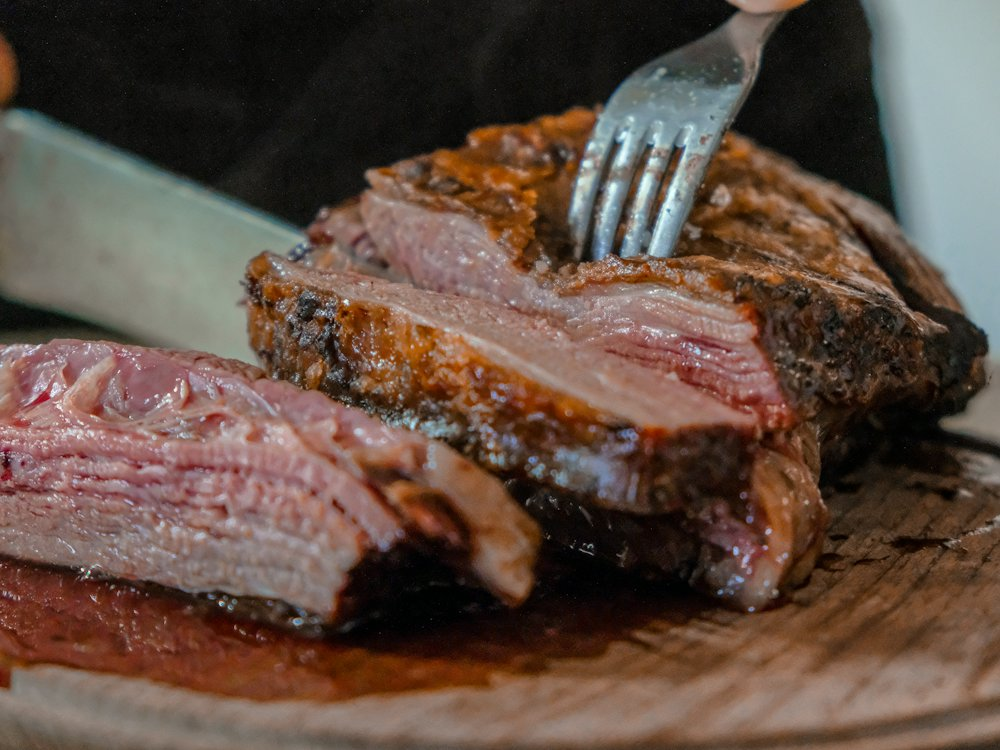

✦ Выбор OnlyGuests Рейтинг 4.9+ и больше 1000 оценок гостей в 2ГИС
Friendly
Ресторан · Лаунж-бар, европейская · Алматы
Рейтинг 2ГИС
★ 4.9
5 897 оценок
Год открытия
нет данных
в открытых источниках не нашли
Средний чек
5 000 ₸
по данным 2ГИС
Адрес и часы
📍 БЦ Танил, пр. Достык, 89г, Алматы · Медеуский район
🕒 часы работы уточняются — смотрите в 2ГИС
О заведении
Лаунж с европейской кухней.
Меню
Рядом в справочнике
Fish Fried · Flask specialty coffee · French 42 · Friends bar & terrace · Gogra · GRANO